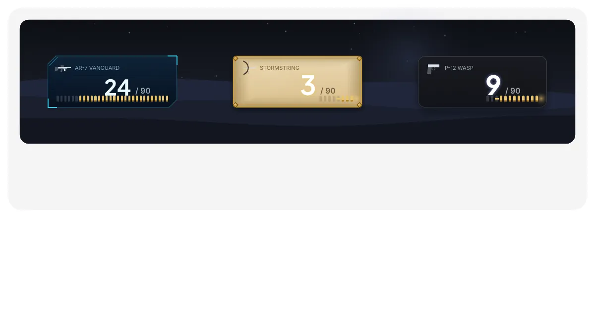

Ammo Counter
Magazine and reserve counters: each shot kicks the number and ejects a spinning casing, low ammo pulses amber, an empty magazine flashes RELOAD and the reload sweeps rounds back in.

Usage
Add glowkit next to eframe:
cargo add glowkit eframeThen draw it inside any egui Ui:
use glowkit::prelude::*;
use glowkit::interactions::{GameAmmoCounter, GameCue};
ui.add(GameAmmoCounter::new(mag, 30, reserve)
.reloading(reload_progress)
.weapon("AR-7 Vanguard")
.cues(&mut cues));Prefer to own the code? The glowkit CLI copies this component's source into your project, shadcn-style:
cargo install glowkit-cli
glowkit add game-ammo-counterAbout Ammo Counter
Ammo Counter is one of 25 components in glowkit's Game UI category. It lives in the glowkit-interactions crate, enabled by the interactions feature of glowkit (on by default). It reads its colors from the active glowkit theme, so it matches the rest of your app in light, dark or a custom brand theme, and every color, size and timing has a setter to override it.
Game interface pieces that take plain game state each frame: main and pause menus, HUD bars with damage trails, minimaps, ammo counters, cooldown icons, hotbars, inventories with tooltips, skill trees, dialogue boxes, quest trackers, loot and achievement popups, kill feeds and scoreboards. Works in Bevy through bevy_egui.